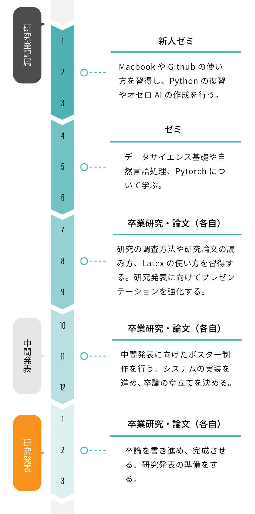
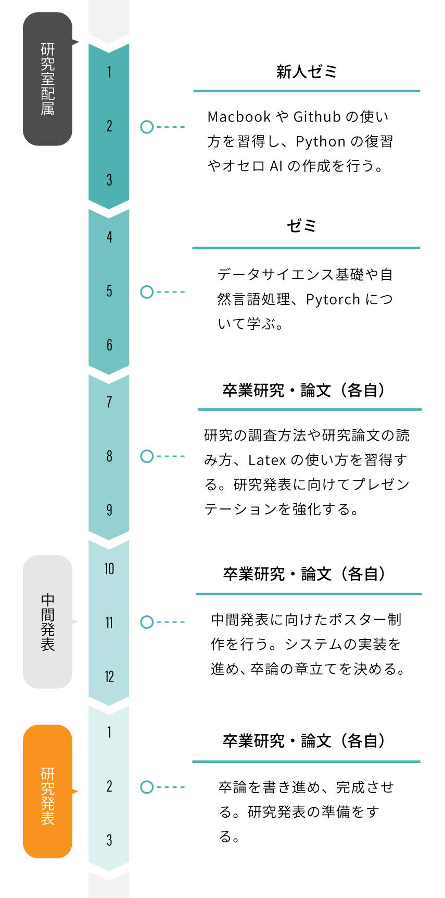

About us
プログラミングと言語
学生時代は、坂村健教授の元でトロンOSの開発に取り組んでいたため、 基盤ソフトウェア開発、特に言語処理系に興味があります。 過去は、静的型付けスクリプト言語Konoha、 高信頼システム開発への言語支援に取り組みました。 現在は、物理エンジンと融合された新しい教育言語 Puppy の研究開発に 着手しております。 また、深層学習(AI)とソフトウェア開発の融合に関心を広げ、 人工知能がソフトウェア開発をしやすいAI言語の構想に取り掛かっています。
形式表現文法と自然言語処理
文書分類、翻訳 、要約、質問応答など。 ソフトウェア開発をできるようなAIを作っています。 AIの基礎を学びながら取り組みます。
情報教育
プログラミングやデータサイエンスを中心に広く、 情報教育に取り組んでいます。
MEMBER
Professor

倉光 君郎
Kimio Kuramitsu
東京大学工学部機械情報工学科
東京大学大学院理学系研究科情報科学専攻
博士（理学）指導教授 坂村健
略歴
2001年 東大大学院情報学環 助手2005年 横浜国立大学工学部電子情報工学科 講師
2006年 米ジョージア工科大学 客員研究員
2007年 横浜国立大学大学院物理情報工学専攻 准教授
2018年 日本女子大学理学部数物科学科 教授
研究プロジェクト（研究代表者）
経済産業省 IPA 未踏ソフトウェア創造事業総務省 SCOPE-R 組込み向けバーチャルマシン
文部科学省 JST/CREST 高信頼OSプロジェクト
Students
M2
Yuka Akinobu
Mari Taguchi
B1
Mayu Tomioka
Miyu Tamura
Alumnuies
Emi Nuijima
Juri Hotaka
Makoto Sakane
Megumi Matsubara
Mika Yagihashi
Momoko Hattori
Yui Wakasugi
Yuka Fujiwara
Yuna Sugimoto
Yurino Sugiuchi
ACHIEVEMENT
2020
Thesis
- 単語分散表現を用いた軽量な係り受け解析の提案 (B4)
- オンラインジャッジにおける学習支援AIの開発に向けて (B4)
- BERTを用いた自由記述感想文からの学習意欲の推定手法 (B4)
- 学習ログとブロックチェーンによる多角的なプログラミング・スキルの証明書 (B4)
- ソースコード・日本語の機械翻訳に向けた研究 (B4)
- エンピリカルスタディ：もっと女子に情報科学をアピールするには？ (B4)
- アルゴリズムの理解を助ける自動アニメーション生成手法の研究 (B4)
- WEBフロントエンド開発におけるフレームワークの比較評価実験 (B4)
Society
- ・情報処理学会xSIGワークショップ, オンライン, 7月(M1口頭) ＜Outstanding Undergraduate 賞＞
- ・情報処理学会第131回プログラミング研究発表会, 東京, 10月(M1: 口頭)
- ・情報処理学会 情報教育シンポジウム12月(B4: ポスター, M1口頭)
SCHEDULE

 
